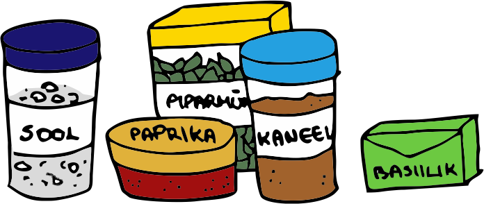

4. Mis tehteid saab erinevate andmetüüpitega teha?
5. Kuidas kirjutada lihtsaid avaldisi ja programme?
Selles peatükis alustame ka programmeerimisega, seega sul võiks olla arvutisse paigaldatud arenduskeskkond (näiteks Thonny).
Mis on andmetüübid?
Programmid kasutavad oma töös igasuguseid erinevaid andmeid. Vahepeal on andmete põhjal vaja midagi arvutada või töödelda, reageerida kuidagi
kasutaja tegevustele, kuvada kasutajale midagi ekraanile. Kõige selle aluseks on andmed ehk informatsioon ning andmed võivad olla erinevat tüüpi. Näiteks
inimest kirjeldavad andmed võiksid olla tema nimi, isikukood, sünnipäev, sugu, elukoht jne.
Neli kõige tavalisemat andmetüüpi on:
1. Täisarvud
2. Ujukomaarvud
3. Sõned
4. Tõeväärtused
Täisarvud on ilma komakohtadeta arvud, näiteks 5 ja 102. Täisarvu tüüpi nimetatakse Pythonis int (lühendatud ingliskeelsest sõnast integer, mis tähendab täisarvu).
Ujukomaarvud on, nagu nimi ütleb, komadega arvud. Siia alla kuuluvad näiteks 1,5 ja 24,345.
Ujukomaarvu tüüpi nimetatakse Pythonis float (mis tuleb ingliskeelsest sõnast floating-point number). Nende juures tuleb ka tähele panna, et kuigi eesti keeles
kasutame komakohaga numbris koma, siis Pythoni jaoks peab olema koma asemel punkt. Ehk siis 1,5 tuleb Pythonis kirjutada 1.5 ja 24,345 oleks 24.345.
Sõned on lihtsalt tekst. Pythonis tuleb kõik sõned alati kirjutada kas jutumärkide või
ülakomade vahele. Näiteks "tere" ja 'tere' on sõned. Inglise keeles kutsutakse seda andmetüüpi string. Pythonis on
kasutatakse tüübinimena jällegi lühendatud varianti str.
Tõeväärtusel on ainult kaks võimalikku väärtust: tõene või väär. Inglise keeles
nimetatakse seda tüüpi boolean ning Pythonis kasutatakse tüübinimena lühendatud varianti
bool. Tõene on inglise keeles
true ja Pythonis kirjutatakse see veel ka suure tähega True. Väär on
inglise keeles false ning Pythonis False.
Proovime nüüd ka oma esimese programmi kirjutada ning uurida tõeväärtusi Thonny abil. Selleks ava kõigepealt Thonny. Tavaliselt loob Thonny avades
ka kohe tühja programmifaili ära. Erinevaid faile näed koodiredaktori kohal vahelehtedel. Veel salvestamata faili puhul kuvatakse vahelehel
<untitled>. Kui tühja faili pole ise tekkinud, siis saab selle luua vajutades tegumiribal valge paberilehe ikooni või
valides menüüst File ning siis New.
Selleks, et saaksime asuda andmetüüpe uurima, läheb meil juba vaja kahte Pythoni käsku. Esimene neist on print().
Sellele käsule saab sulgudesse anda ette mingi väärtuse, mida soovime ekraanile väljastada. Proovi kirjutada Thonnysse järgmine koodijupp:
print("Tere!")
Selleks, et programmi käivitada, võid vajutada tegumiribal rohelist valge noolega nuppu või valida menüüst Run ning
sealt omakorda Run current script. Esimesel käivitamisel palub Thonny programmi salvestada ka, kui see pole juba salvestatud.
Mõtle programmi failile mingi nimi ning salvesta see endale kuhugi ära. Pärast salvestamist kood käivitub ja koodiredaktori alla konsooli peaks ilmuma "Tere!".
Teine vajaminev käsk on type(), millele antakse sulgude sisse samuti mingi väärtus ning see käsk tagastab selle väärtuse tüübi.
Näiteks "Tere!" tüübi saame teada järgmise koodijupi abil:
type("Tere!")
Võid proovida ka seda koodijuppi käivitada, kuid midagi ei tohiks praegu konsooli tekkida. Seda sellepärast, et type() käsk
küll leiab väärtuse tüübi, aga ei väljasta seda konsooli. Väljastamiseks läheb meil jälle vaja print() käsku. Saame panna oma
tüübi leidmise käsu väljastamise käsu sisse nii:
print(type("Tere!"))
Seda programmi käivitades, peaks konsooli ilmuma <class 'str'>. See tähenab, et "Tere!" on Pythoni keeles
str tüüpi, meie inimkeeles kutsume seda tüüpi sõneks.
Mis on muutujad?
Nüüd me teame, millist tüüpi andmeid me programmeerides kasutada saame. Aga kuidas neid kasutada? Me saame erinevaid andmeid kas otse
programmi sisse kirjutada või kasutajalt küsida. Selleks, et saaksime andmetega tööd teha, peab arvuti neid oma mälus hoidma. Arvuti mälus on palju
erinevaid registreid, kus saab andmeid hoiustada, aga meil inimesena on keeruline mäluregistrite tasandil andmetega tööd teha. Siin tulevad nüüd mängu
muutujad. Muutujatega saame tähistada mingi koha arvuti mälus ning hoida seal mingeid andmeid. Me saame muutujale anda mingi
oma valitud nime. Näiteks kui tahame hoida muutujas kellegi nime, siis võime pannagi muutuja nimeks "nimi". Kui tahame hoida muutujas vanust, siis võime panna
muutuja nimeks "vanus".
Muutujatest võib mõelda kui maitseainepurkidest. Meil on mingi hunnik maitseaineid (andmeid) ning me paneme nad erinevatesse purkidesse
(mälusse) ning selleks, et hiljem lihtsamalt soovitud maitseained üles leida, paneme purkidele ka täpsustavad sildid, mis ütlevad, mis sorti maitseaine antud purgis on
(muutujad).

Muutujate loomiseks programmis saame kirjutada muutuja nime (mille me ise valime) ning võrdusmärgiga saame sinna muutujasse panna mingi
väärtuse. Seda tegemust nimetatakse muutujale väärtuse omistamiseks. Järgnevas koodijupis loome kaks muutujat "nimi" ja "vanus" ning
omistame neile vastavalt väärtusteks "Mati" ja "10". Jälgi, et "Mati" on sõne tüüpi ja 10 on int tüüpi. Saame eelnevalt õpitud käsu "type" abil ka kontrollida
mis tüüpi on muutujas hoitav väärtus. Siis tuleb käsule "type" anda argumendiks muutuja nimi.
nimi = "Mati" vanus = 10
print(nimi) print(vanus)
print(type(nimi)) print(type(vanus))
Selles koodijupis loome kaks muutujat, omistame neile väärtused, väljastame kummagi väärtuse ekraanile ning seejärel väljastame
ekraanile ka nende muutujate väärtuste tüübid. Konsooli peaks seepeale ilmuma:
Mati 10 <class 'str'> <class 'int'>
Õpime nüüd ära veel ühe uue käsu, milleks on input(). Inglise keeles tähendab input
sisendit ning just kasutajalt sisendi saamiseks seda käsku kasutataksegi. Kui programmis on input() käsk, siis jääb arvuti ootama, et
kasutaja konsooli midagi trükiks ja Enter klahvi vajutaks. Siis tagastab input() programmile kasutaja sisestatud
sõne ning me saame seda oma programmis kasutada. Näiteks võime kasutajalt küsida tema nime ja teda siis nimeliselt tervitada. Või küsida tema sünniaastat ja arvutada, kui
vana ta praegu on. Käsk input() tagastab sisestatud väärtuse alati sõnena, isegi kui kasutaja sisestab arvu. Võid seda kohe ka ise proovida. Näiteks
küsime käsu input() abil kasutajalt kõigepealt ta nime ja siis vanust ning kontrollime, mis tüüpi sisestatud väärtused on:
print("Sisesta oma nimi: ") nimi = input()
print("Sisesta oma vanus: ") vanus = input()
print(type(nimi)) print(type(vanus))
Kõigepealt anname print() käsuga kasutajale teada, mis andmed ta sisestama peaks. Seejärel kasutame input()
käsku ning salvestame kasutaja sisestatud väärtuse muutujasse. Konsoolis võiks programmi käivitamine välja näha selline:
Sisesta oma nimi: Mati Sisesta oma vanus: 13 <class 'str'> <class 'str'>
Tegelikult saab sama asja ka natuke lühemalt kirjutada ning hoopis input-käsule
sulgudes argumendiks anda need juhised, mida praegu ise print-käsuga väljastasime.
nimi = input("Sisesta oma nimi: ") vanus = input("Sisesta oma vanus: ")
print(type(nimi)) print(type(vanus))
Muutujate nimetamine
Siiski ei saa me muutujatele päris igasuguseid nimesid panna, on ka mõned piirangud. Muutuja nimi ei tohi sisaldada tühikuid.
Tühikute asemel kasutatakse tihtipeale alakriipsu "_". Kuigi Python lubab kasutada muutuja nimes nii suuri kui väikseid tähti, on pigem kombeks kasutada
ainult väikseid tähti. Samuti peab muutuja nimi algama kas tähe või alakriipsuga, numbrid ja paljud teised sümbolid pole nime alguses lubatud. Muutujaid nimetades
on alati hea kasutada tähendusega nimesid. Võime küll panna muutujale nimeks a või b,
kui näiteks pikkus ja kõrgus näitavad palju paremini, mida see muutujasse salvestatud
väärtus tähendab.
Tegevused andmetüüpidega
Erinevate andmetüüpidega saame sooritada erinevaid tegevusi. Näiteks täis- ja ujukomaarvudega saame sooritada erinevaid arvutustehteid.
Sõnesid saame omavahel kokku liita ja moodustada nii uusi sõnesid. Tõeväärtusi kasutatakse loogilistes avaldistes ehk tingimuslausetes.
Loogilise avaldise vastus on alati kas tõene või väär ning
kõnekeeles saab neid esitada kas-küsimustena. Näiteks 2 + 2 = 4 on loogiline avaldis, mille väärtus on tõene.
Küsimusele Kas 2 + 2 = 4? oskame vastata Jah. Loogilise avaldise
2 + 2 = 5 väärtus oleks aga väär.
Tehted täis- ja ujukomaarvudega
Matemaatikast teame, et arve saab omavahel liita, lahutada, korrutada ja jagada. Mida vanemasse klassi jõuda, seda rohkem
lisandub erinevaid tehteid, mida tundma õpime. Põhikooli lõpuks oskame juba lisaks põhitehetele ka astendada, ruutjuurt võtta ning kolmnurga siinust ja koosinust arvutada.
Kõike seda saab teha ka programmeerides. Põhilised tehted, mida võib vaja minna:
Avaldis
Väärtus
Selgitus
2 + 5
7
Liitmine
5 - 2
3
Lahutamine
2 * 5
10
Korrutamine
5 / 2
2.5
Jagamine (tulemuseks alati ujukomaarv)
5 // 2
2
Täisosa leidmine (sarnane jagamisele, aga tulemuseks on alati täisav)
5 ** 2
25
Astendamine
5 % 2
1
Jäägi leidmine
Neid tehteid võid ka ise Thonnys järele proovida. Ära unusta kasutada print() käsku, et
tehte tulemus ka väljastada. Näiteks:
print(21 / 3)
See koodijupp annab meile konsooli tulemuse 7.0. Paneme tähele, et tavaline jagamise tehe annab meile
tulemuse alati komakohaga, isegi kui arvud jaguvad täpselt. 21 jagatud 3-ga on täpselt 7, aga Pythonis programmeerides on jagamise tulemuseks alati
ujukomaarv. Seega on 21 / 3 tulemus 7.0, mitte 7.
Tehted sõnedega
Sõnedega on samuti võimalik erinevaid tehteid teha. Näiteks saame sõnesid omavahel liita ja sõnet korrutada mingi arvuga.
Siin aga pole tulemused võib-olla nii iseenesest mõistetavad kui arvudega toimetades. Sõnesid liites saame tulemuseks uue sõne, mis on kokku pandud liidetavatest.
Sõnet arvuga korrutades liidetakse sõnet iseendaga see arv kordi. Lisaks on sõnedel terve hulk erinevaid meetodeid, mis näiteks muudavad kõik
sõnes olevad tähed trükitähtedeks või hoopis muudavad iga sõna esimese tähe suureks. Meetodid lisatakse sõnede külge punktiga ja meetodi lõpus on sulud.
Avaldis
Väärtus
Selgitus
"Tere" + " päevast!"
"Tere päevast!"
Sõnede liitmine
"Tere" * 3
"TereTereTere"
Korrutamine sõne ja arvu vahel
"Tere".upper()
"TERE"
Muudab sõnes kõik tähed suureks
"Tere".lower()
"tere"
Muudab sõnes kõik tähed väikseks
"Tere päevast! täna on ilus ilm.".title()
"Tere Päevast! Täna On Ilus Ilm"
Muudab iga sõna algustähe suureks
"Tere päevast! täna on ilus ilm.".capitalize()
"Tere päevast! Täna on ilus ilm."
Muudab iga lause algustäht suureks
"Tere päevast!".replace("e", "ö")
"Törö päövast!"
Asendab sõnes etteantud sõned teise etteantud sõnega
"Aias sadas saia".count("as")
2
Loendab etteantud sõne esinemiste arvu sõnes
Proovime näiteks kirjutada programmi, mis küsib kasutajalt tema nime ja väljastab mitu pikka sulghäälikut on kasutaja nimes.
Kõigepealt peame mõtlema, millised on pikad sulghäälikud? Need on teatavasti k, p, t. Konkreetse tähe
esinemiste arvu loendamiseks sobiks meile count-meetod. Seega näiteks k-tähe loendamine ja selle arvu väljastamine
käiks nii:
nimi = input("Sisesta oma nimi: ") k_arv = nimi.count("k") print("Nimes on " + str(k_arv) + " k-tähte")
Siin küsime kasutajalt tema nime ning salvestame selle muutujasse nimi.
Seejärel leiame k-tähe esinemiste arvu kasutaja sisestatud nimes ning salvestame selle muutujasse k_arv.
Viimase sammuna väljastame leitud arvu ka kasutajale. Siin tuleb tähele panna, et tahame liita leitud arvu kokku sõnedega ning selleks peame
kõigepealt k_arvu teisendama sõneks. Kui prooviksime ilma teisendamata int-tüüpi
arvu sõnele liita, saaksime veateate.
Sarnaselt k-tähe loendamisele, saame loendada ka kõiki teisi sulghäälikuid ning liita nende esinemiste arvud omavahel kokku.
nimi = input("Sisesta oma nimi: ") kpt_arv = nimi.count("k") + nimi.count("p") + nimi.count("t") print("Nimes on " + str(kpt_arv) + " tugevat sulghäälikut")
Kuid mis siis kui kasutaja nimi algab suure K-tähega? Hetkel meie programm otsib ainult väikseid tähti. Selle parandamiseks saame
kas lisada samasugused loendamised ka suurte tähtede jaoks või siis näiteks muuta kõik tähed kasutaja nimes väikesteks. Kas teame mõnda meetodit, mis oskaks seda teha?
Äkki sobiks meetod lower?
nimi = input("Sisesta oma nimi: ") nimi = nimi.lower() #siin muudame nimes kõik tähed väikesteks ja salvestame uuesti samasse muutujasse kpt_arv = nimi.count("k") + nimi.count("p") + nimi.count("t") print("Nimes on " + str(kpt_arv) + " tugevat sulghäälikut")
Andmetüüpide teisendamine
Vahepeal on meil vaja andmeid teisendada ühest tüübist teise. Input-käsk annab meile
tulemuse alati sõnena, isegi kui kasutaja sisestab mingi arvu. Kui aga tahame kasutaja sisendit arvuna kasutada ja sellega näiteks arvutusi teha,
siis peame sisendi ise käsitsi int- või float-tüübiks teisendama. Tüübiteisendusteks
kasutatavad käsud on täpselt samade nimedega nagu tüübid ise: int(), float(), str(), bool(). Järgnevalt on mõned näited
tüübiteisendustest:
int("Tere") #ValueError: invalid literal for int() with base 10: 'Tere'
Sõnede teisendamisel täisarvudeks ja ujukomaarvudeks on oluline, et sõne sisu oleks arv. Kui proovime näiteks sõnet "Tere"
teisendada int-tüübiks, saame hoopis veateate. Tõeväärtuste teisendamine on ka huvitav. Kui teisendada sõne teõväärtuseks, siis
on tulemus False juhul kui sõne on tühi ja True kui seal on vähemalt üks täht, number või sümbol. Arvude
teisendamisel tõeväärtuseks on tulemus False juhul kui arv on 0 ning kõikide teiste arvude puhul on tulemus True.
Harjutused
Tervitus
Proovi kirjutada programm, mis küsiks kasutajalt tema nime (ees- ja perekonnanimi) ning tervitaks teda nimeliselt.
Programm peaks kuvama nii ees- kui perekonnanime algustähe suurelt ja ülejäänud tähed väikselt (sidekriipsuga nimedega ei pea
programm õigesti töötama). Mõned näited programmitööst:
Sisesta oma nimi: kristi kuusk Tere tulemast programmeerimise kursusele, Kristi Kuusk!
Sisesta oma nimi: MATI MUSTIKAS Tere tulemast programmeerimise kursusele, Mati Mustikas!
Sisesta oma nimi: Kati liis orAv Tere tulemast programmeerimise kursusele, Kati Liis Orav!
Võileivatort
Mari tahab oma sünnipäeval külalistele võileivatorti pakkuda ja tal on juba tordi tegemiseks röstsaiapakid
ostetud. Ta teab ka mitu külalist ta sünnipäevale tuleb. Kirjuta programm, mis aitaks Maril arvutada, mitme kihiga tordi ta teha saab
(eeldusel, et igaüks saab ühe tüki).
Programm peaks:
1. Küsima kasutajalt mitu röstsaiapakki tal on
2. Küsima mitu viilu on ühes pakis
3. Küsima mitu tordisööjat on
4. Arvutama ja väljastama mitu kihti saab sellest röstsaiakogusest teha (arvestame, et poolikut kihti ei tee)
Mõned näited programmi tööst:
Sisesta röstsaiapakkide arv: 3 Sisesta viilude arv ühes pakis: 15 Sisesta tordisööjate arv: 10 Röstsaia on piisavalt 4-kihilise tordi jaoks.
Sisesta röstsaiapakkide arv: 2 Sisesta viilude arv ühes pakis: 20 Sisesta tordisööjate arv: 8 Röstsaia on piisavalt 5-kihilise tordi jaoks.